OpenClaw 動作原理
OpenClaw は普通のチャットボットではなく、あなたのコンピュータの中に住むプライベート秘書です。微信（WeChat）、WhatsApp、Telegram などのチャットソフトを通じて指示を受け取り、メール送信、カレンダー確認、ブラウザ起動、コマンド実行を支援し、さらには24時間自動で働くことができます！

中心となる概念

| 概念 | たとえ | 役割 |
|---|---|---|
| Gateway（ゲートウェイ） | ビルのフロント受付 | すべての外部メッセージを受け取り、正しいワークスペースに振り分ける |
| Workspace（ワークスペース） | あなたのプライベートオフィス | 具体的なタスクを処理し、会話履歴とスキルを管理する |
| LLM（大規模言語モデル） | AI アドバイザーの頭脳 | あなたの意図を理解し、返答を生成する |
| Skills（スキル） | ツールボックスの中のツール | 特定の機能を実行する（天気確認、コード作成、スケジュール管理など） |
| Channels（チャネル） | 通信デバイス | 異なるメッセージプラットフォームを接続する |
OpenClaw とは何か？
OpenClaw は、次のようなものです完全オープンソースで、自分のコンピュータ上で動作する AI アシスタント（以前は Clawdbot と呼ばれ、後に改名されました）。
ChatGPT のようにただ会話するだけでなく、実際に行動を起こします：
- WhatsApp で「明日のフライトを調べて」と言えば、自動的にブラウザを開き、航空会社のウェブサイトにログインし、スクリーンショットを送ってくれます。
- 数百のスキル（Skills）をサポートしており、コミュニティによってさらに増え続けています。
- 長期的な記憶（あなたの好みを覚えている）を持ち、自分で新しいスキルを生成することもできます。
- 最も重要なのは：データはすべてあなたのコンピュータ内にあり、クラウドにアップロードされないため、プライバシーが安全です。
中心となる考え方：AI 大規模モデル（頭脳） + ローカルツール（手足） + チャットソフト（口と耳）を接続するこれにより、AI を本当の意味であなたのコンピュータの執事にします。
全体アーキテクチャ：Gateway は頭脳の司令塔
OpenClaw の最も中核となる部分はGateway（ゲートウェイ）です。それは自宅の中央制御盤のようなもので、すべてがそれを中心に動きます。

各部分の簡単な説明：
- Channel Bridge（チャネルブリッジ）：WhatsApp、Telegram などのチャットソフトと「ハンドシェイク」する役割を担います。例えば、Baileys ライブラリを使って WhatsApp に接続します。
- Gateway：唯一の実行プロセス（1つのポートを使用、デフォルトは 18789）で、交換手のようにメッセージを AI に転送します。
- AI 頭脳：実際に思考するのは外部の大規模モデル（あなたが API キーを提供）であり、Gateway は「それを呼び出して仕事をさせる」だけを担当します。
- ツール & スキル：AI の手足であり、例えばブラウザを開く、ファイルを読み書きする、メールを送信するなどです。
- 記憶システム：ノートのようなもので、AI は前回あなたが話したことを忘れません。
メッセージはどのようにアクションになるのか？
実際の例を使って説明します：「WhatsApp で『今日のメールをまとめて要約して送って』と言う」。
フロー図は以下の通りです：

詳しく分解すると：
- 指示を受け取る：あなたがメッセージを送信 → チャットソフトの Bridge がメッセージを Gateway にプッシュします。
- 記憶を検索する：Gateway があなたの「個人プロフィール」（Session + Memory）を開き、あなたが古いユーザーであることや、前回どんな口調を好んだかを把握します。
- AI が思考する：メッセージ + 記憶をまとめて AI 頭脳に送ります。AI は賢い秘書のように「うーん、まずメールを読んで、それから要約が必要だ」と考えます。
- ツールを呼び出す：AI が「Gmail スキルを使う」と言います。Gateway は安全なサンドボックス内で実行します（AI がファイルを勝手に変更するのを防ぎます）。
- 実行 + フィードバック：ツールが結果を AI に渡し、AI が要約を作成します。
- ユーザーに返信する：Gateway が要約を WhatsApp に送り返します。するとあなたは受け取れます！
全体アーキテクチャ
3層アーキテクチャ設計
OpenClaw は古典的な3層アーキテクチャを採用しています。外から内へ層ごとに理解していきましょう：

なぜこのように設計するのか？
たとえ：大企業を想像してください
- 外層（ユーザーインターフェース）= 顧客は電話、メール、微信（WeChat）など複数の方法で会社に連絡できる
- 中層（Gateway）= フロント受付がすべての顧客を一元的に受け付け、適切な部門に振り分ける
- 内層（Workspace）= 異なる業務部門がそれぞれ異なる業務を担当する
- 基盤層（能力層）= 会社のリソース（専門コンサルタント、ツール・設備など）
中核コンポーネント詳細
Gateway：統一されたポータル
Gateway とは何か？
Gateway（ゲートウェイ）は OpenClaw の入り口であり、すべての外部メッセージは必ずここを通過します。

Gateway の3つの主要な責務：
1. 認証（Authentication）
あなたが承認したプラットフォームだけが接続できることを保証する

2. ルーティング（Routing）
メッセージを正しいワークスペースに送る

3. ログ記録（Logging）
すべてのやり取りを記録し、デバッグと監査を容易にする
Gateway を起動するコマンド：
# 启动网关，监听 18789 端口 openclaw gateway --port 18789 --verbose
Workspace：あなたのプライベートオフィス
Workspace とは何か？
Workspace（ワークスペース）は実際にタスクを処理する場所です。複数のワークスペースを持つことができ、それぞれが異なることを担当します。

典型的な Workspace 設定の例：
# workspace-personal.yaml name: "个人助理" llm: provider: "anthropic" # 使用 Claude model: "claude-sonnet-4" apiKey: "sk-ant-xxx" skills: - weather # 查天气 - calendar # 管理日程 - email # 处理邮件 - web-search # 网页搜索 settings: language: "zh-CN" temperature: 0.7 max_tokens: 4000
複数ワークスペースの使用シナリオ：

LLM：AI の頭脳
LLM とは何か？
LLM（Large Language Model、大規模言語モデル）は OpenClaw のインテリジェントな頭脳であり、あなたの意図を理解して返答を生成する役割を担います。

OpenClaw がサポートする LLM：
| プロバイダー | モデル例 | 特徴 | 適用シナリオ |
|---|---|---|---|
| Anthropic | Claude Sonnet 4 | バランスが良く、安全、多言語に優れる | 日常会話、文章作成 |
| OpenAI | GPT-4 | 専門的で知識が広い | 専門的なタスク、分析 |
| DeepSeek | DeepSeek-V3 | コード能力が高く、安価 | プログラミング支援 |
| ローカルデプロイ | Ollama | 完全にプライベートで無料 | プライバシーに敏感なシナリオ |
Channels：外部世界への接続
Channels とは何か？
Channels（チャネル）は、さまざまなメッセージプラットフォームを接続する「アダプター」です。

各 Channel の役割：
- メッセージの受信：プラットフォームからユーザーメッセージを取得する
- フォーマット変換：OpenClaw 内部フォーマットに統一変換する
- 返信の送信：OpenClaw の返信をプラットフォームに送り返す
例：Telegram Channel のワークフロー

メッセージの流れのプロセス
それでは、完全なメッセージが OpenClaw の中でどのように流れるのかを見てみましょう：
完全なメッセージフロー図

詳細ステップ解説
ステップ 1-3：メッセージの受信と標準化
ユーザーが Telegram でメッセージを送信すると、Telegram Channel がそれを OpenClaw の標準形式に変換します：
{
"platform": "telegram",
"channel_id": "telegram_123",
"user": {
"id": "user_456",
"name": "Alice"
},
"message": {
"type": "text",
"content": "上海明天天气?",
"timestamp": "2024-03-09T10:30:00Z"
}
}
ステップ 4-5：認証とルーティング
Gateway はこのメッセージを検査します：
- 送信元は認証済みか？
- どの Workspace にルーティングすべきか？
- ユーザーに権限があるか？
ステップ 6-8：AI の理解と意思決定
Workspace は完全なコンテキストを準備して LLM に送信します：
[系统提示] 你是一个个人助理，可以使用以下技能： - weather: 查询天气 - calendar: 管理日程 - ... [对话历史] 用户: 你好 助理: 你好！有什么可以帮你的？ [当前消息] 用户: 上海明天天气?
ステップ 9-12：スキル実行
LLM は weather skill を呼び出すことを決定し、Workspace が実行して結果を取得します：
{
"location": "上海",
"date": "2024-03-10",
"weather": "晴转多云",
"temperature": "18-26°C",
"humidity": "60%",
"wind": "东风 3-4级"
}ステップ 13-17：返信を生成して返す
LLM は天気データに基づいて自然言語の返信を生成し、元の経路を通ってユーザーに返します。
スキルシステム
スキル（Skills）とは何か？
スキルは、OpenClaw が特定のタスクを実行するための「能力モジュール」です。OpenClaw を人に例えるなら、スキルはその人が身につけたさまざまな能力です。

スキルの構造
各スキルには以下が含まれます：

例：天気スキルの定義

スキルの呼び出しフロー

スキルの安全メカニズム
OpenClaw はスキルに対して厳格なセキュリティ管理を行っています：

権限タイプ：
| 権限 | 説明 | 例 |
|---|---|---|
network |
ネットワークアクセス | 天気確認、ウェブ検索 |
filesystem |
ファイルシステム | ファイルの読み書き |
email |
メールアクセス | メールの送信/受信 |
calendar |
カレンダーアクセス | スケジュール管理 |
system |
システム操作 | コマンド実行 |
完全なワークフロー
実際のシナリオを通じて、すべての概念を結び付けましょう：
シナリオ：毎日の天気予報を定期的に送信
要件：毎朝 8 時に、Telegram で今日の天気＋スケジュールリマインダーを受け取る

設定コード
# workspace-daily-report.yaml
name: "每日报告助理"
# 定时任务
cron_jobs:
- name: "早间报告"
schedule: "0 8 * * *" # 每天早上8点
action:
type: "send_message"
channel: "telegram"
template: |
请生成今日报告：
1. 查询我所在城市的天气
2. 列出今天的所有日程
3. 以友好的方式呈现
# 可用技能
skills:
- weather
- calendar
# LLM 配置
llm:
provider: "anthropic"
model: "claude-sonnet-4"
ユーザーが受け取るメッセージ
早安！今日简报 天气情况 上海今天多云，气温 15-23°C 建议穿着：薄外套 降雨概率：10% 今日日程 - 09:00 - 10:00 团队晨会 - 14:00 - 15:30 客户演示 - 16:00 - 17:00 代码评审 温馨提示 今天有 3 个会议，建议提前准备演示材料。
データフローと状態管理
データはどのように保存されるのか？

データタイプと保存方法：
| データタイプ | 保存方法 | 保持期間 | 例 |
|---|---|---|---|
| 現在のセッション状態 | メモリ | セッション終了まで | 進行中の会話コンテキスト |
| 会話履歴 | ローカルデータベース | 設定可能（例：30日間） | 過去のチャット記録 |
| ユーザー設定 | 設定ファイル | 永続 | APIキー、プリファレンス設定 |
| スキルデータ | スキル自身が管理 | スキルによる | スケジュール、メール下書き |
| システムログ | ログファイル | 設定可能 | エラー、デバッグ情報 |
拡張性とプラグインエコシステム
新機能を追加するには？
OpenClaw の設計により、簡単に拡張できます：

スキルインストールの流れ

クリックしてノートを共有
ノートはこの記事の内容を拡張したものである必要があります！
記事の投稿は、こちらをクリック
登録招待コードの取得方法
ノートを共有する前にログインが必要です！
登録招待コードの取得方法